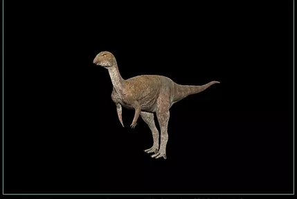
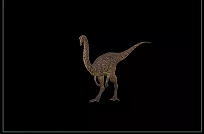
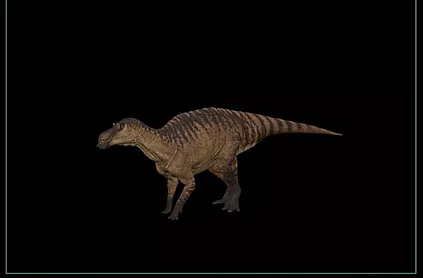
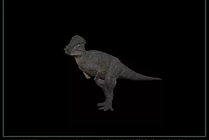
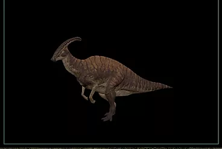
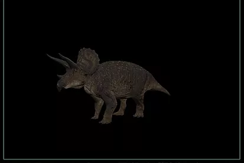

The Isle EVRIMA BETA
-Durée de progression : De hatchling à juvénile : 20 minutes De juvenile à adulte : 85 minutes De jeune adulte à full adulte : 150 minutes ----------------------------------------- -environnement : vivent au bord de l'eau avec de la nourriture abondante -avantage : Bonne vitesse Dégâts de saignement élevés Dégâts Brute moyens -inconvénient : Très vulnérable au grand dinosaures Ne peu pas stomp ----------------------------------------- -comportement : agressif, territorial -comportement sociale : vivent en groupe, il peut y avoir un/une patriarche(un ancien) pour guider leur groupe lors d'une migration, 1 mal dominant
#Nombre d'incubation par invite: 2 #Nombre d’œuf par nest : 4 #Lieu de pondaison : pas loin des source d'eau et de la nourriture abondante #Les HatchLing : les petits reste dans leur nid #Les juves: suivent leur mère #sub adult: deviennent indépendant
[si un carni fait un crie de peur, l'herbi ne peut pas lançer une attaque]() [.](Groupe) /choix de fuir ou défence. [.](Seul) attaquant. [.](Petit) protèges les petits. attaquant. [.](Nest) attaquant
-Durée de progression : hatchling à juvénile : 10 minutes. juviénile à jeune adulte : 15 minutes jeune adulte à full adulte : 15 minutes ----------------------------------------- -environnement : vivent dans beaucoup de végetation -avantage : Cour vite Ils possèdent une grande endurance Ne mange pas beaucoup ne perde pas de vie dans leur terriers lorsqu'ils ont soif ou faim -inconvénient : Faible dégât Peux de vie Les Utahraptors juvéniles peuvent les tuer dans leur terrier leur progressions s’arrête lorsqu'ils sont dans leur nid ----------------------------------------- -comportement : peureux, curieux -comportement sociale : sociable, vivent souvent en plusieurs groupe, vivent en couple
#Nombre d'incubation par invite: 4 #Nombre d’œuf par nest : illimiter #Lieu de pondaison : cacher de la vue des prédateurs #Les HatchLing : #juve: suivent leur parents
[.](Groupe) peureux, curieux [.](Seul) [.](Petit) protège leur petit. attaquant. [.](Nest) attaquant
-Durée de progression : De hathling a juvénile : 15 minutes De juvénile a jeune adulte : 40 minutes De jeune adulte a full adulte : 50 minutes ----------------------------------------- -environnement : foret, plaine -avantage : Fort en troupeau Peut se faire protéger des autre herbivores en restant prêt de ceci Rapide et endurant Peut survivre à un Utahraptor si le Gallimimus n est pas seul Consomme peux de nourriture -inconvénient : Faible dégât Faible vie ----------------------------------------- -comportement : peureux,curieux -comportement sociale : vivent en groupe, 1 mal dominant,
#Nombre d'incubation par invite: 4 #Nombre d’œuf par nest : illimiter #Lieu de pondaison : cacher de la vue des predateur #Les HatchLing : #les juves: suivent leur mère
[si un carni fait un crie de peur, l'herbi ne peut pas lançer une attaque]() [.](Groupe) peureux curieux, le mal dominant peut être agressif face aux étrangers [.](Seul) [.](Petit) protège leur petit. attaquant. [.](Nest) protège leur nest. attaquant.
-Durée de progression : De hatchling à juvénile : 20 minutes De juvénile à adulte : 50 minutes De adulte à full adulte : 60 minutes ----------------------------------------- -environnement : Les endroit calme et boisé , les foret et les montagne de faible altitude, et grande prairi -avantage : Très rapide Très endurant N'as pas faim souvent -inconvénient : Faible point de vie Faible Dégâts ----------------------------------------- -comportement : : peureux, protège leur petit contre les charognard -comportement sociale : sociable, vivent en groupe, vivent en couple
#Nombre d'incubation par invite: 3 #Nombre d’œuf par nest : 6 #Lieu de pondaison : cacher de la vue des prédateurs #Les HatchLing : reste cacher #juve: suivent leur mère
[si un carni fait un crie de peur, l'herbi ne peut pas lançer une attaque]() [.](Groupe) /choix de fuire ou defence. [.](Seul) attaquant. les couple aussi [.](Petit) protège leur petit. attaquant. [.](Nest) protège leur nest. attaquant.
-Durée de progression : De hatchling à juvénile : 20 minutes De juvénile à jeune adulte: 70 minutes De jeune adulte à full adulte: 60 minutes ----------------------------------------- -environnement : Forêt boisée et plaine. -avantage : Endurance la plus élevée de tous les juvéniles Santé et masse correcte pour sa taille. Inflige de très gros dommage pour sa taille. -inconvénient : Très faible résistance aux saignements. Pas particulièrement rapide Étonnamment fort pour sa taille mais peut encore être tué facilement par les plus gros dinosaures. ----------------------------------------- -comportement : peureux, protège leur petit contre les charognards -comportement sociale : sociable, vivent en groupe, 1 mal dominant,
#Nombre d'incubation par invite: 3 #Nombre d’œuf par nest : 6 #Lieu de pondaison : cacher de la vue des prédateur #Les HatchLing :
[si un carni fait un crie de peur, l'herbi ne peut pas lançer une attaque]() [.](Groupe) /dominant attaquant /choix de fuire ou défence. [.](Seul) attaquant. [.](Petit) protège leur petit. attaquant. [.](nest) protège leur nest. attaquant.
-Durée de progression : De hatchling à juvénile : 25 minutes De juvénile à adulte : 60 minutes De adulte à full adulte : 120 minutes ----------------------------------------- -environnement : Les très grandes plaines, et les forêts très peu boisées. -avantage : Possède une grande endurance, mais il se fait rattraper par les carnivores en embuscade. Dégâts élevé Résistance au saignement modéré -inconvénient : Vitesse de guérison des saignements basse Ne peux pas stomp avec une pattes cassés ----------------------------------------- -comportement : Craintif, protège leur petit contre les charognards -comportement sociale : vivent en groupe, il vivent en couple
#Nombre d'incubation par invite: 3 #Nombre d’œuf par nest : 6 #Lieu de pondaison : cacher de la vue des prédateurs #Les HatchLing :
[si un carni fait un crie de peur, l'herbi ne peut pas lançer une attaque]() [.](Groupe) /choix de fuire ou défence. [.](Seul) un herbi seul ou isoler du groupe devient un attaquant. Les couples aussi [.](Petit) Protège leur petit. attaquant. [.](Nest) Protège leur nest. attaquant.
-Durée de progression : De hatchling à Juvénile : 30 minutes De juvénile à sub adulte : 60 minutes De sub adulte à adulte : 200 minutes De adulte à full adulte : 100 minutes ----------------------------------------- -environnement : Les très grandes plaines, et les forêts très peu boisées. -avantage : Il tourne bien sur lui même en marche lente Il possède une santé élevé et provoque des dégâts et des saignements élevé. -inconvénient : Il est le dinosaure le plus lent ( en survie) Il ne peux pas stomp avec une pattes cassés. Peut être tué par des apex comme le Tyrannosaurus rex. Le tricératops soigne ses blessures lentement par rapport aux autres dinosaures. ----------------------------------------- -comportement : agressif, territoriaux, ils peuvent charger sur une centaine de mètre -comportement sociale : il vivent en plusieurs groupe, 1 mal dominant, il peut y avoir un/une patriarche(un ancien) pour guider leur groupe lors d'une migration
#Nombre d'incubation par invite: 3 #Nombre d’œuf par nest : 3 #Lieu de pondaison : au bord de l'eau #Les HatchLing :
[si un carni fait un crie de peur, l'herbi ne peut pas lançer une attaque]() [.](Groupe) /Le dominant, attaquant. /choix de fuir ou défence. [.](Seul) attaquant. [.](Petit) protège leur petit. attaquant. [.](Nest) protège leur nest. attaquant.